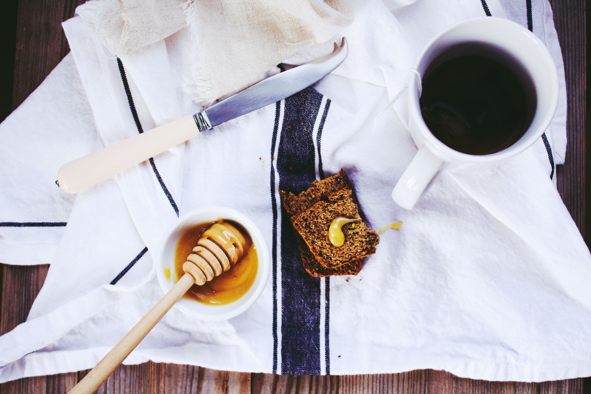

The type of Black tea
차라고 하면 흔히 홍차와 녹차를 떠올리게 되는데 크게 이외에 과일차, 백차, 허브차, 우롱차 등 다양하다. 대표적인 홍차의 종류로는
- 얼그레이
- 잉글리쉬브렉퍼스트
- 차이티
- 다질링
- 아쌈
등이 있는데, 이외에 종류가 매우 다양해서 취향에 따라 골라 마시기 좋다.

Recommend your first tea
날에 따라 먹는 술이 다르듯이 홍차도 마찬가지이다. 경험상 좋았던 조합을 추천하고자 한다.
- 너무 졸릴때 - 쌉쌀한 아메리카노 대신 따뜻한 잉글리쉬브렉퍼스트(영국인들에게 아아는 이것!)
- 몸이 차가운 것 같을 때 - 고소한 향이 나는 다질링
- 향긋한 것을 마시고 싶을 때 - 대표적인 얼그레이 또는 많은 가향차
- 더운 여름날 시원한 차 한잔 할때 - 레이디그레이 냉침차
- 추운 겨울날 따뜻한 차 마시고 싶을 때 - 아쌈밀크티

Enjoy More!
더 맛있게 차마시는 방법!
- 케이크나 초콜릿과 같은 Teafood와 함께 곁들여 먹기 - 특히 마들렌 추천!!
- 라떼를 좋아한다면 홍차에도 우유를 넣어 마시기
- 입맛 따라 꿀, 밤페이스트, 사과, 레몬 등을 넣거나 띄워먹어도 좋아요!